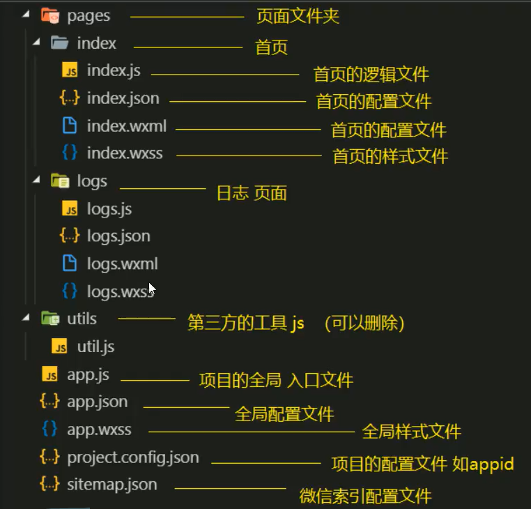

目录结构
JSON 是一种数据格式,并不是编程语言,在小程序中,JSON扮演的静态配置的角色。WXML 充当的就是类似 HTML 的角色。WXSS 具有 CSS 大部分的特性,小程序在 WXSS 也做了一些扩充和修改。JS 提供和用户做交互功能：响应用户的点击、获取用户的位置等等。

配置文件
全局配置文件(app.json):
pages: 为页面配置,默认第一个为首页
windows: 为用于设置小程序的状态栏、导航条、标题、窗口背景色。
tabbar: 如果小程序是一个多 tab 应用（客户端窗口的底部或顶部有 tab 栏可以切换页面），可以通过 tabBar 配置项指定 tab 栏的表现，以及 tab 切换时显示的对应页面。
其余详细参数见官方文档
{
"pages": [
"pages/index/index",
"pages/logs/index"
],
"window": {
"navigationBarTitleText": "Demo"
},
"tabBar": {
"list": [{
"pagePath": "pages/index/index",
"text": "首页"
}, {
"pagePath": "pages/logs/index",
"text": "日志"
}]
},
"networkTimeout": {
"request": 10000,
"downloadFile": 10000
},
"debug": true
}页面配置文件(page.json):
指定页面的配置文件,覆盖全局配置文件效果
sitemap配置:
用于配置小程序是否能被微信索引,具体见官方文档